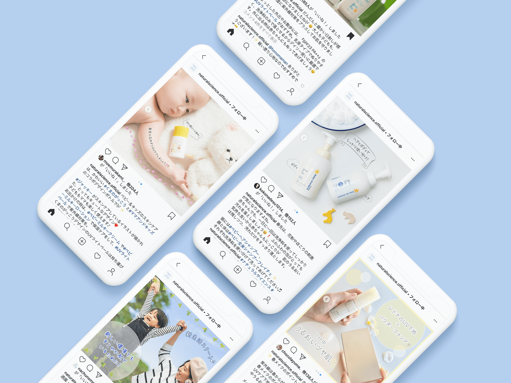

Contents design
某化粧品事業会社のSNS投稿用画像・動画の作成を担当しました。
ユーザーに対して、季節やイベントに合わせたアプローチを週に2〜3回程度Instagramで行なっており、そのコンテンツの制作を行なっていました。
私が担当した時期から徐々にインスタからのECサイトへの流入が増えてきました。下記に担当した投稿(一部)をご紹介しています。
作成したインスタ画像のモックアップ
作成したイメージの一覧(一部)